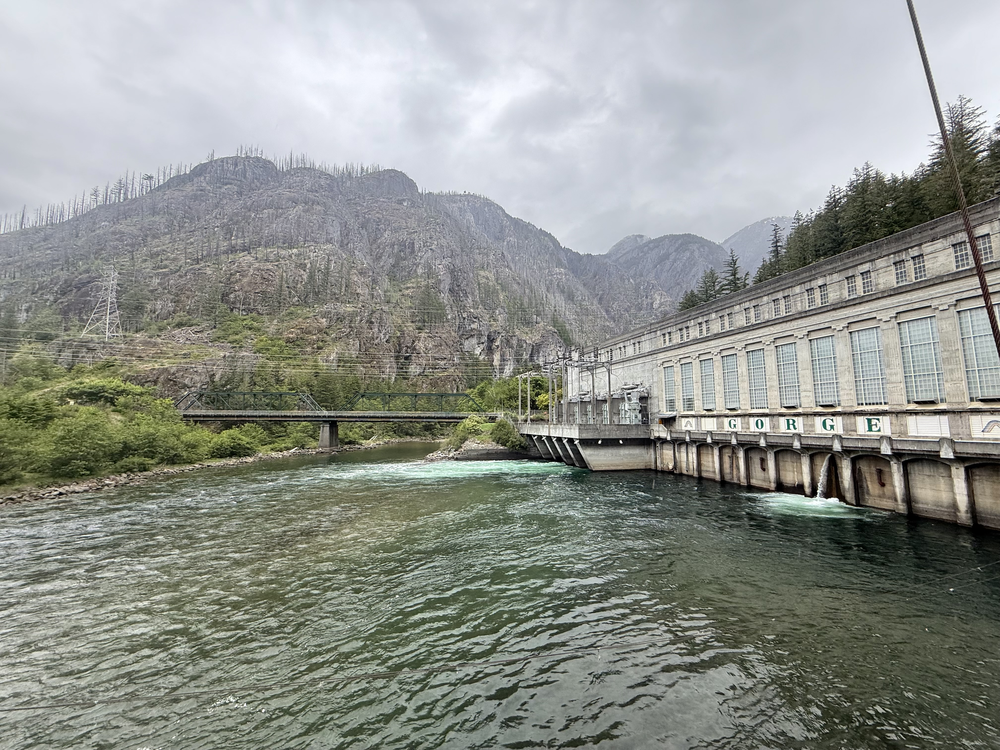

Is it better to have green energy or increased salmon habitat? Issues facing dam re-licensing processes in the Upper Skagit watershed:
Saturday, May 17th, the 447 (watershed ecology) group went to Ross Dam, Diablo Dam overlook, Gorge Dam, Newhalem, Baker Lake Dam, Oso, Skagit River, Swinomish River, and Sauk River.
We were discussing the different functions of each dam, which are all run by Seattle City Light. Ross dam, the upper-most dam on the Skagit, is primarily for flood control and water retention with the ability to store 9 days to 9 weeks worth of water in the reservoir above the dam. Diablo Dam, the middle dam on the Upper Skagit, is primarily for hydropower. The lowest of the Skagit dam is Gorge Dam and is, interestingly, a “fish-first” dam. The primary function of Gorge dam is to moderate water levels in a way that will benefit fish. While the power generated from water releases does not go unused, the changes in flow rates are strictly determined by fish through the following:
constant monitoring of how much water in river (so as to never de-water or dry out redds)
they lower the river when salmon/steelhead come in to spawn, to ensure redds get built more in the center of river, rather than edges. This guarantees the redds will have water coverage and stay in channel even with fluctuating water levels
stream and redd monitoring to ensure that even the highest ‘elevation’ redd stays wet and adjust dam operations to do so, never letting the water level drop below the level needed by that redd
they ensure the power balancing flows don’t interfere with fish activity and keep the ramping rate slowed down to not freak out or strand fish (ie., no large flood-pulses from dam releases)
So, power, water resource management, and fish-friendly operations? It may seem that the Upper Skagit dams may have it pretty figured out. Yet no anadromous fish make it upstream of the Gorges dam: one of many reasons these dams create tension between Seattle City Light and the residents (current and traditional) of the Upper Skagit watershed…

Gorge Dam (“fish first”)
Why are the talk about these dams now? Why is it such a hot topic of debate? These three dams, with their distinct function, work together as a system. When operations of one change, the others can be affected in turn.
The Ross Lake dam had it FERC license expire in January of this year. FERC licenses give approval from the federal government for dams to operate, detail how that particular dam must be operated for the duration of the license period, and are valid for 30-50 years. This means that when a license expires, the renewal process provides a relatively short window of time for all licensing partners to determine how the dam will operate for potentially the next half century. Seattle City Light is currently about 5-10 years into the arduous process of renewing the Ross Lake dam licence. As such, there has been a lot of discussion about what the future of this dam will be, specifically with regards to fish. Recall that these dams are operated by Seattle City Light, with the power generated being going only to Seattle residents, meaning the environments and watersheds that are being impacted by the dam presence the most are not receiving the benefits the dams provide. This has led to a lot of pressure for dam removals from locals, particularly tribes, amidst the renewal process. Traditional knowledge asserts that there were historic salmon runs above this dam, while western scientists point to lack of isotope or molecular evidence to support this. This has led to a contentious re-licencing process as SCL works to find a solution that will satisfy all licensing partners.
One approach to satisfying all licensing partner goals (namely the goals of keeping the dams and helping the salmon) that they are looking towards is improving fish passage. With Ross Lake dam towering at 590 ft tall (30 feet shorter than its initially intended height), traditional fish passage methods present a challenge should licensing partners agree to return salmon to above the highest of the 3 dams on the upper skagit river.
Nearby Baker Lake uses a “trap and truck” approach which traps sockeye below the dam using a salmon lock (“elevator”) system that allows them to be loaded into trucks without human handling. They then get trucked and released above the 312 ft tall dam along a reach of river with “redd beaches”– ie., reaches with ample spawning habitat. The loading, trucking, and releasing process takes about 30 minutes.
It now becomes important to note that Ross Lake Dam is not accessible via road. You can only get to the dam by hiking the 1.5 mi trail off of HWY 20, or by driving to Diablo Dam and boarding a barge. The barge can boat you from Diablo Dam to the base of Ross Lake Dam, and from there you can take a steep gravel access road to the top of the dam and upper reservoir. A stark difference from the infrastructure present below and above Baker Lake’s dam.
Ross Lake Dam. 590 ft tall.
The city and the tribes had reached a head, with two options on the table: be in the renewal process indefinitely, or agree to put fish above Ross Lake dam. Seattle City Light has agreed to the latter.
This is not the end of the issue associated with the Upper Skagit dams and their relicensing processes, and trucking the fish above the dams will not be the end of the salmon issue in the Skagit River. There are still several areas of public criticism. Some reaches between dams, particularly above the Gorges dam, that were once moderately flowing streams, are now de-watered most of the year, changing the core geomorphologic and hydrological regimes that were once present and in turn, the habitat availability for organisms within the reach. Simply put, Salmon, if reintroduced to these reaches, would not be able to survive in a meaningful way.
Further, at the complete other end of the Skagit, on Fir Island near Mt. Vernon, what was once an estuary and rich habitat for outgoing smolt, has been converted to farmland. Fingers are being pointed back and forth between Seattle City Light, who attempted to purchase farmlands on Fir Island to restore estuarian habitat, and the farmers, who passed a law saying farm land can’t be purchased with the purpose of executing a restoration project. Seattle City Lights look towards habitat restoration to take pressure off of them for the impacts of the dams, and farmers look towards dam removal to take pressure off of them for the impacts of agriculture on former smolt nursery habitat.
All this is to say, the dam functions and the move towards improving fish passage (or attempting to) are two of many issues facing the Skagit River. The FERC relicensing process has opened the conversation for what the future of this river will be, the state of the salmon populations, and the ethics of these dams existing so far from the watershed that is benefiting from their presence.
De-watered reach downstream of Gorge Dam